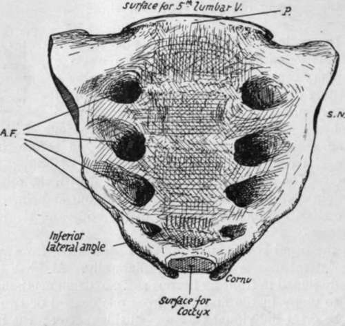
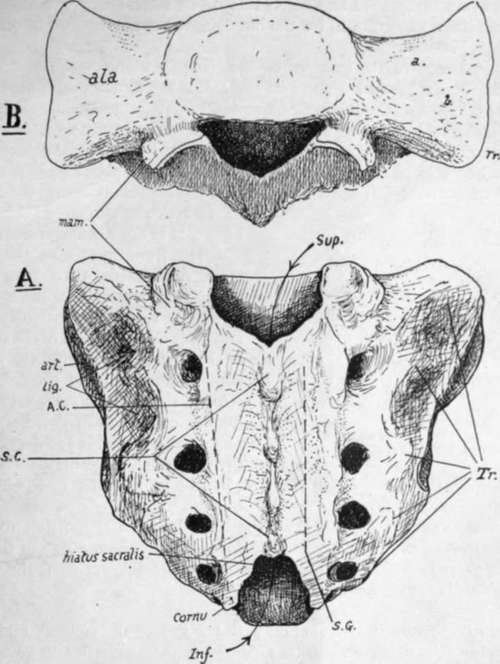

Sacral Vertebra
Description
This section is from the book "The Anatomy Of The Human Skeleton", by J. Ernest Frazer. Also available from Amazon: The anatomy of the human skeleton.
Sacral Vertebra
Five (or sometimes six) vertebrae below the lumbar region are fused in the adult into a single bone, the Sacrum, which forms the back wall of the bony pelvis, being situated between the two innominate bones and articulating with the upper and back parts of their inner surfaces.
The Sacrum is a wedge-shaped bone, with its base uppermost. Looked at from the front it presents an anterior surface (Fig. 31) concave from above downwards and slightly from side to side, of which the central part is evidently composed of the fused bodies of the sacral vertebrae. Outside these are four anterior sacral foramina on each side, in nearly parallel rows, for the exit of nerves, and again outside these are the lateral masses of the bone, marked by neural grooves leading out of the foramina.
The surface is bounded externally by the lateral margin, the edge of the lateral mass: this margin has a depression, the sacral notch, opposite the second segment, and ends just below the fourth foramen in the inferior lateral angle, while the last segment projects below this as a blunt apex.lt
Fig. 31.-Front aspect of sacrum. A.F. anterior sacral foramina ; S.N. lateral sacral notch ; P. sacral promontory. Apex at lower end.
The convex posterior surface (Fig. 32) has in the middle the fused neural arches that cover in the sacral canal: the canal is open above and below, and at the lower end one or two of the neural arches may be partly deficient. Various bony projections may be recognised as lying in series with the processes of the true vertebras. In the middle line is a row of connected spines, the spinal crest (S.C.), outside this is a narrow sacral groove (S.G.), floored by fused laminae and bounded laterally by a row of low tubercles in series with the articular processes, the articular crest (A.C.) ; outside these are the four posterior sacral foramina, and then the back aspect of the lateral mass. The sacral groove and its neighbouring processes give origin to post-vertebral muscles, and the two articular crests end below in the projecting cornua which represent the processes of the last sacral vertebra for connection with the Coccyx. As the last laminar arch is wanting-and sometimes the fourth also-the articular crests are longer than the spinal, and the interval between them, opening into the sacral canal, is termed the hiatus sacralis.
Fig. 32.-A. posterior aspect of sacrum. The arrows pass through the upper and lower openings into the sacral canal. 7 r. transverse processes; S.C. crest made by spinous processes; A.C. articular crest; S.G. sacral groove. B. view from above, showing the upper aspect of the lateral masses, forming the ake. a. impression for nerve ; 6. roughened markings for ligamentous fibres.
The lateral mass has a rough double hollow on its postero-lateral aspect, opposite the first two segments, making a ligamentous area (lig.) for the strong posterior sacroiliac ligaments-and in front of and below this, on its lateral aspect, a slightly concave articular or auricular surface (art.) for the innominate bone : this corresponds in extent with three sacral bodies.
The upper aspect of the sacrum, or base (Fig. 32), shows the first sacral body centrally, and the alee on each side of it, expanding outwards ; each ala is the upper surface of the lateral mass, and has an inner and anterior smooth part slightly grooved for the lumbo-sacral cord, and an outer and posterior rougher ligamentous part. Behind the first body is the upper opening of the sacral canal, somewhat triangular in shape, flanked by a large superior articular process on each side, and between this and the body is an intervertebral notch. A mammillary tubercle is below the hinder edge of the articular surface on the back of the bone : it is not always present.
The front surface of the bone looks more downwards than forwards in its upper part, when the bone is in position, as may be seen in the articulated skeleton, and thus the front part of the upper border of the first body becomes the most prominent forward part of the bone and constitutes the sacral promontory. When the lumbar column is in position, the lumbosacral angle of about 120 degrees is formed here between the first sacral and last lumbar segments, the angle being rounded by the intervening disc, which is much thicker in front than behind.
The female sacrum is broader than the male bone in proportion to its length. The anterior curve of the bone from above down is a continuous one in the male, but in the female there is usually a more sudden curve in the lower part, the upper being nearly flat. This is not a constant feature.
Examine the sacrum in conjunction with the rest of the column, and it becomes evident that the lateral masses can be analysed into transverse and costal elements. The transverse processes (Fig. 32, Tr.) of the third and fourth elements can be recognised as prominent tubercles on the dorsal surface of the bone, just outside the foramina : again, it is easy to see the transverse element of the first segment in the thick prominence that forms the upper lateral angle of the bone, and the second transverse point can be recognised without difficulty in the middle of the ligamentous sacro-iliac area. Now look at the bone from the front, and there is no difficulty in seeing the costal elements in the bars of bone that separate the anterior foramina : all this is simply an expression of the fundamental structure of the column, and the anterior primary divisions of the nerves come forward between the ribs while the posterior divisions pass back between the transverse processes.
Continue to: